Un intérieurqui vouscorrespond.
Architecture d'intérieur, décoration et relooking complet à Walcourt. Du premier conseil au suivi de chantier, avec des plans 3D pour voir la pièce avant les travaux.
5,019 avis sur Google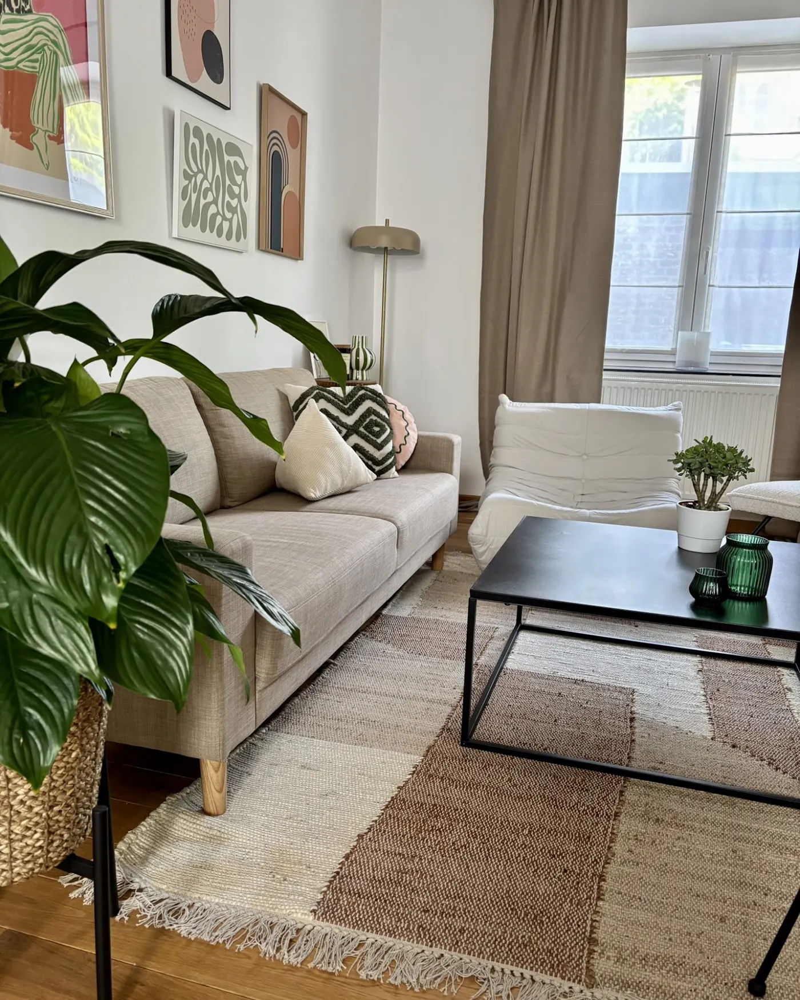
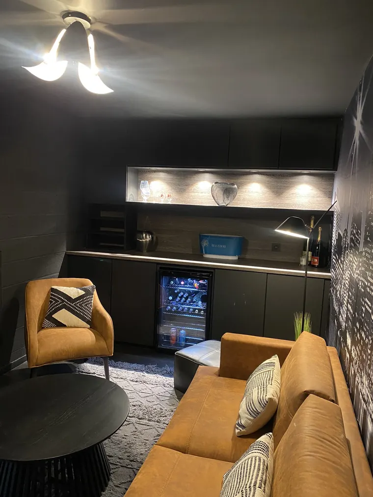
- 5,0 sur Googlesur 19 avis de clients
- Plans 3Dpour se projeter dans les futurs espaces
- Suivi de chantieret coordination des intervenants
- Maisons et cabinetsparticuliers comme professionnels
« Une décoration harmonieuse pour se sentir bien chez soi. »Emmanuelle Coniglio, WAW Intérieur · Walcourt
Du premier conseil au dernier détail.
Une pièce à rafraîchir ou une maison entière : le studio vous suit à l'étape qui vous convient, et les avis le racontent mieux que nous.
Demander une visite conseil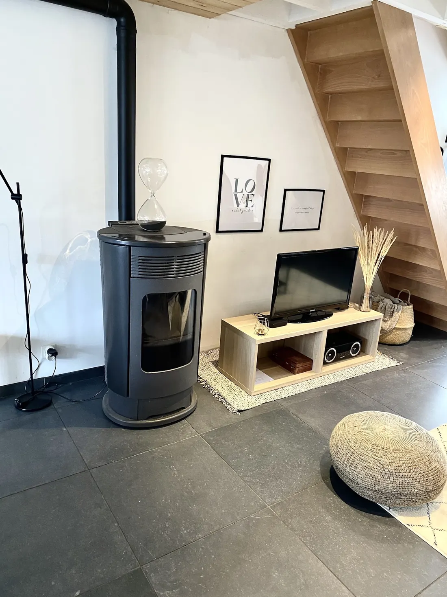
- i.
Visite conseil
Un premier passage chez vous pour poser vos envies et repartir avec des idées, avant d'entamer de plus gros projets.
« […] elle adapte ses propositions aux spécificités et style de la maison […] »Amely H., avis Google
- ii.
Décoration et relooking complet
Une pièce ou tout l'intérieur change d'allure : ambiance, mobilier, petits détails qui font la différence.
« Elle m'a également aidé pour le choix du mobilier. »severine d., avis Google
- iii.
Architecture d'intérieur
Une salle de bain refaite du sol au plafond, un cabinet professionnel à créer : le projet est dessiné en plans 3D, pour voir les espaces avant les travaux.
« Les plans 3D qu'elle réalise permettent vraiment de se projeter dans les futurs epsaces. »Tiziana B., avis Google
- iv.
Suivi de chantier
Délais expliqués, coordination entre les différents intervenants, imprévus gérés : vous savez où en est votre projet.
« On est toujours tenus au courant de tout et on sait qu’on peut compter sur elle. »Céline D., avis Google
Des pièces qui respirent.
Séjours, cuisine, salles de bain, chambre d'enfant : les photos publiées sur la fiche Google du studio. Bois clair, lin, touches noires et tons terre.
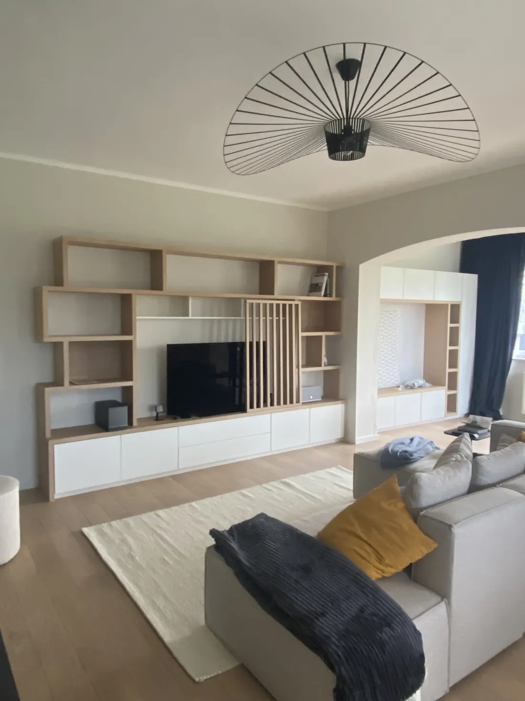
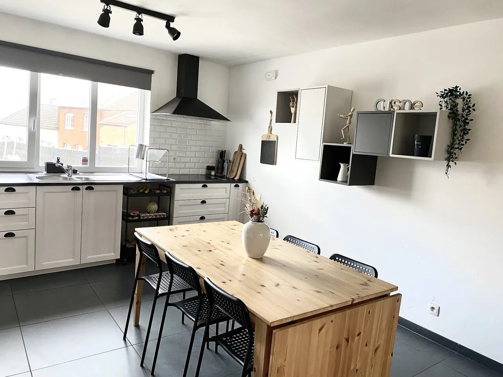
Bois clair, lin, noir mat : une palette qui revient d'une maison à l'autre.
Photos de la fiche Google du studio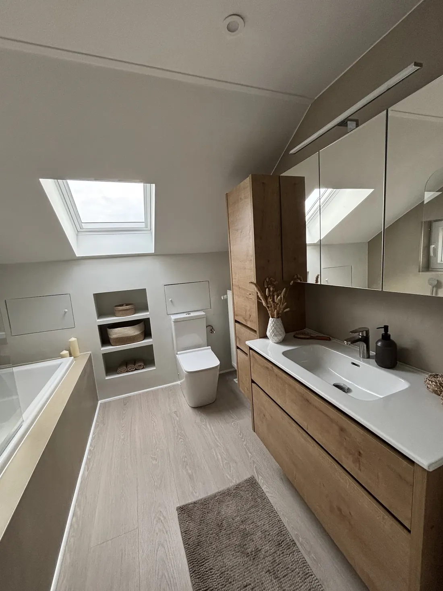
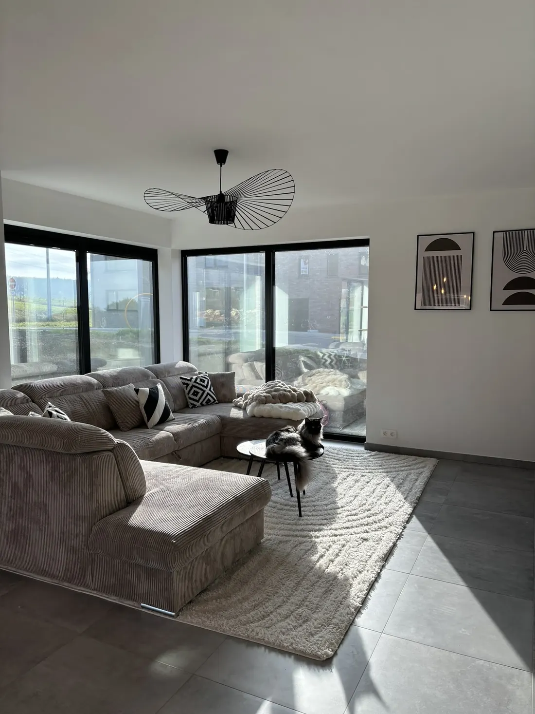
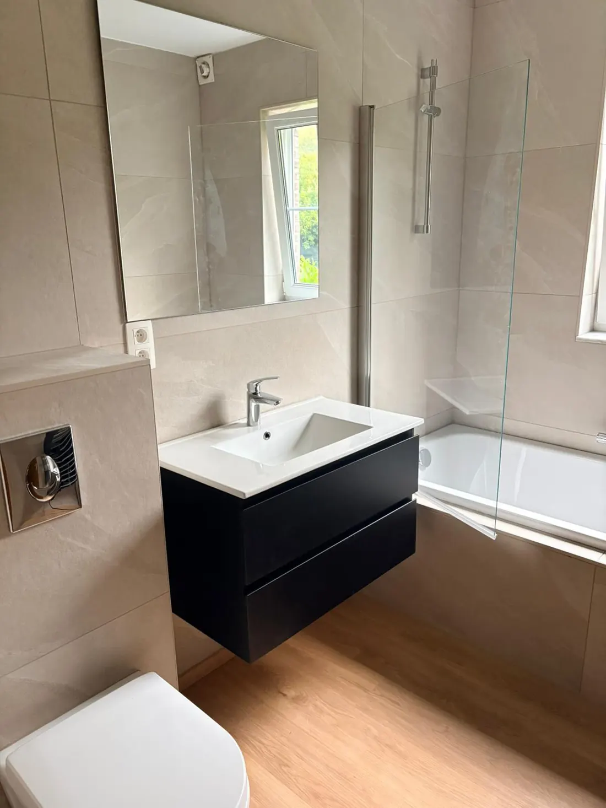
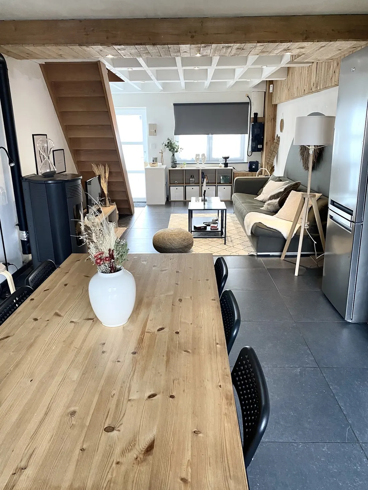
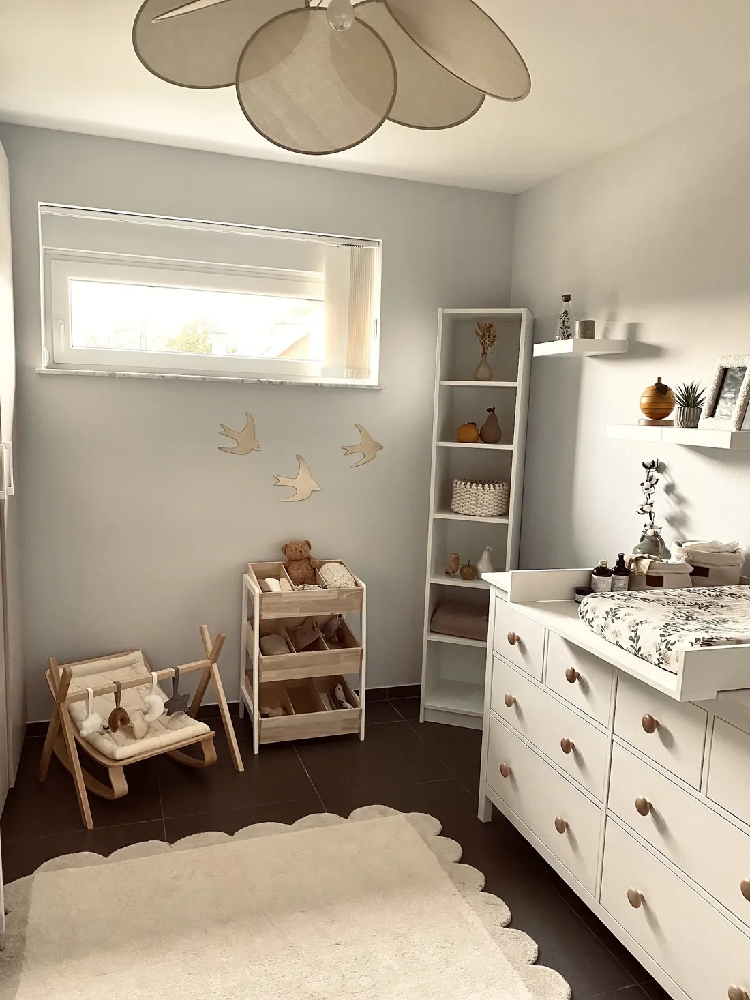
Les mots qui reviennent.
Dans les cinq avis Google relevés, les mêmes mots reviennent d'un client à l'autre. Les voici, puis les avis eux-mêmes.
- professionnelle4 avis
- à l'écoute3 avis
- disponible3 avis
- les yeux fermés3 avis
- pleine de bonnes idées2 avis
Demandez votre visite conseil.
Choisissez votre projet et le moment qui vous arrange. Le studio vous rappelle pour fixer le jour de la visite.
Parlons de votre intérieur.
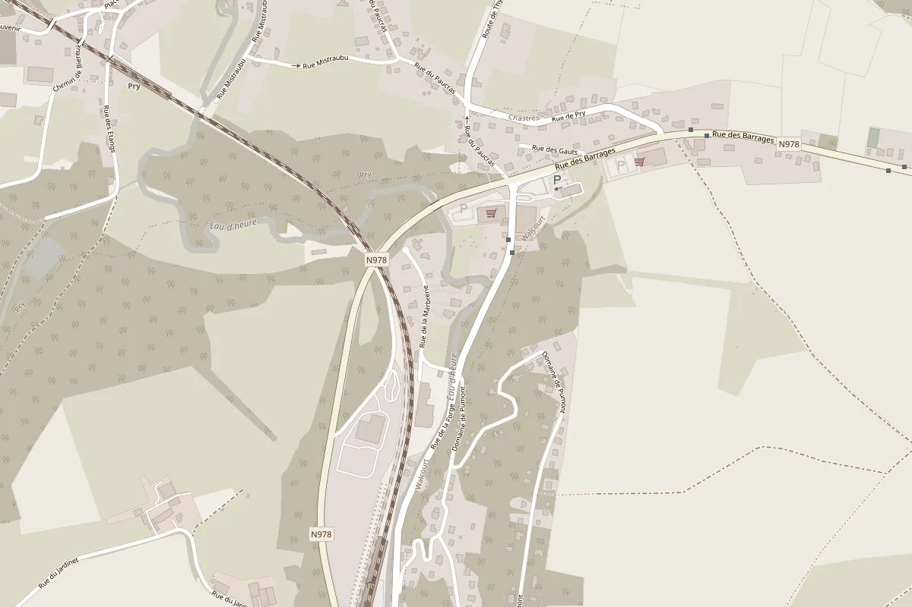
© OpenStreetMap